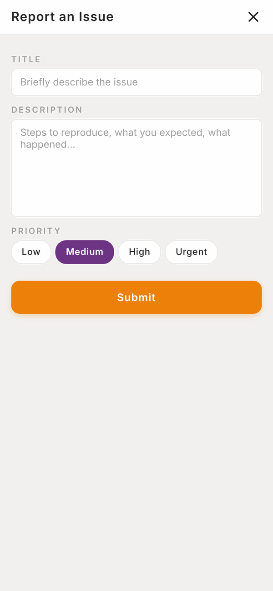

Totality for clients
Troubleshooting
Quick fixes for the most common problems, and how to report one if the fix doesn't work.
Most problems are fixed by one of these three things. Try them in order.
- Pull down to refresh on the screen you're on.
- Close Totality fully and open it again. This also loads the newest version of the app.
- Check your internet. Try opening a website. Switch between wifi and mobile data.
Report a problem from the app#
The purple question mark button on most screens sends a problem report straight to the Totality team.
- Tap the purple ? button.
- Under Title, briefly describe the issue, for example "Can't save my workout".
- Under Description, say what you did, what you expected, and what happened instead.
- Pick a Priority: Low, Medium, High or Urgent.
- Tap Submit. You'll see "Ticket submitted".

You can also email admintotality@gmail.com, or tap Contact Support in Settings.
Logging in#
"Incorrect email or password" Check you're using the email your trainer or gym invited you with, and caps lock is off. Then use Forgot Password? on the log in screen.
"This password reset link is invalid or has expired" Links work once and expire after an hour. Send yourself a new one with Forgot Password? and use it straight away. Open it on the same device if you can.
I never got the invite or reset email Check junk and spam, and search for "Totality". Ask your trainer or gym to check your email address.
It keeps showing the setup questions The five setup steps must be finished with Complete before Home opens. If you finished and they still show, close the app fully and open it again.
Workouts#
The Finish button won't work Every set needs Done or Skip. Scroll up to find sets without a tick.
"Could not save session" Check your internet and tap Finish again. Your sets are kept on your phone, so nothing is lost. If you've been logged out, log back in and open the workout again.
Today's workout is wrong or missing Home shows the session for today from your primary programme. If it's wrong, check the Calendar, where you may have moved it. Otherwise, message your trainer.
Food#
I can't find a food Try a shorter word, clear the brand filter, scan the barcode, tell Tali, or use Manual entry.
The barcode scanner shows a typing box instead of the camera Your browser doesn't support live scanning. Type the barcode number, or use the phone app.
"Ask Tali isn't available on your account right now" Tali for meals comes with your trainer's Totality plan. Ask your trainer.
My numbers don't match Totality Nutrition Make sure you're logged in to both apps with the same email. Pull down to refresh.
Bookings and payments#
I can't book a class Check you have a card saved in Payments > Payment method for paid classes, that your membership isn't frozen, and that the class hasn't started.
"No payment method saved. Please contact your gym." Add a card in Payments > Payment method, then book again.
My card was declined Add a different card, or check with your bank. Then let your gym or trainer know so they can try the payment again.
Notifications#
I don't get any notifications Push notifications only work in the phone app. Check that:
- Your phone allows Totality to send notifications (in your phone's Settings).
- Push notifications is on in Totality's Settings.
- Quiet hours isn't holding them (9pm to 7am).
Wearables#
My steps aren't showing Connect in the phone app, not the website. Open Home on your phone to refresh. Check Totality is allowed to read your health data in Apple Health or Health Connect.
Still stuck?#
Tap the purple ? button, or email admintotality@gmail.com. Tell us:
- Which phone or browser you use (for example iPhone, Android, or Chrome on a computer).
- What you were trying to do.
- What happened, and any message you saw, word for word.
A screenshot helps a lot.
Questions#
Who do I contact, my trainer or Totality?
Your trainer or gym for anything about your training, food targets, bookings and payments. Totality (the ? button or admintotality@gmail.com) for problems with the app itself.
How do I get the latest version of the app?
Close Totality fully and open it again. Most updates arrive that way, without the app store.
The app is slow.
Close it fully and reopen it. Check your internet. If one screen is always slow, tell us with the ? button.
Will I lose my data if I reinstall the app?
No. Your data is stored in your account, not on your phone. Log in again and it's all there. (A workout you haven't finished yet, and starred favourite foods, are kept on the phone, so finish your workout first.)